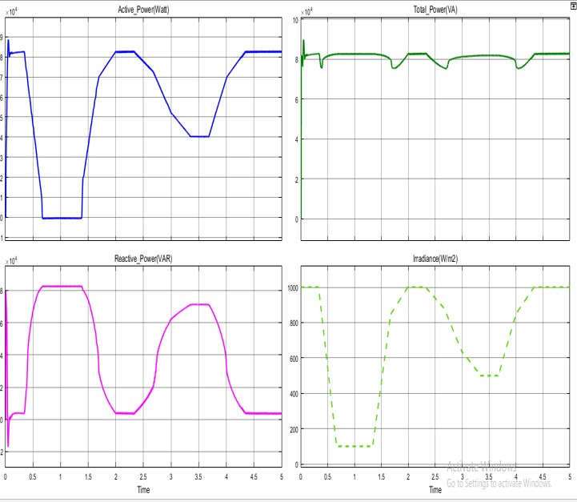
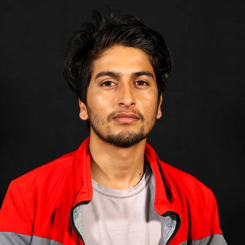
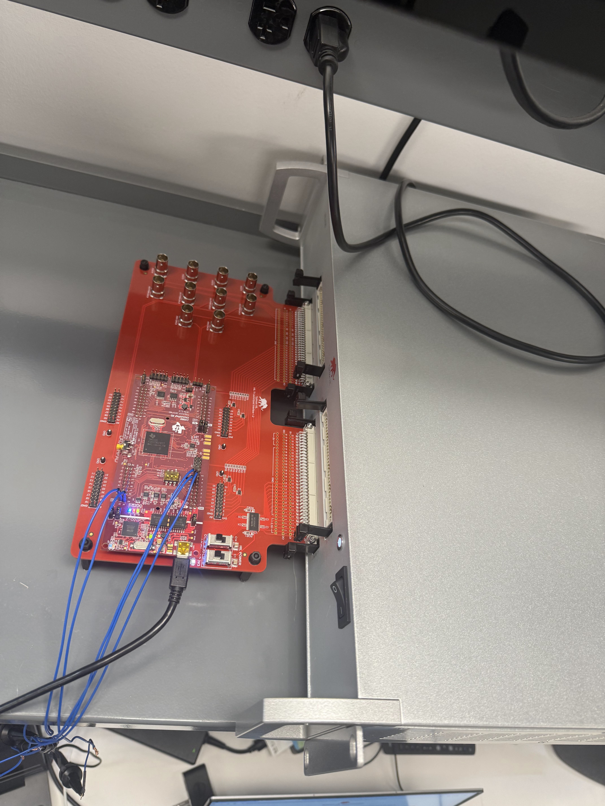
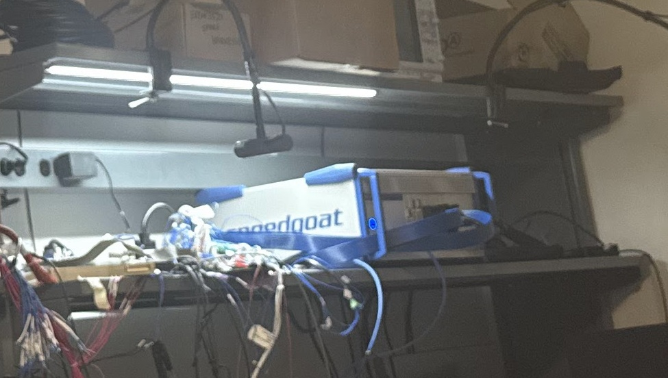
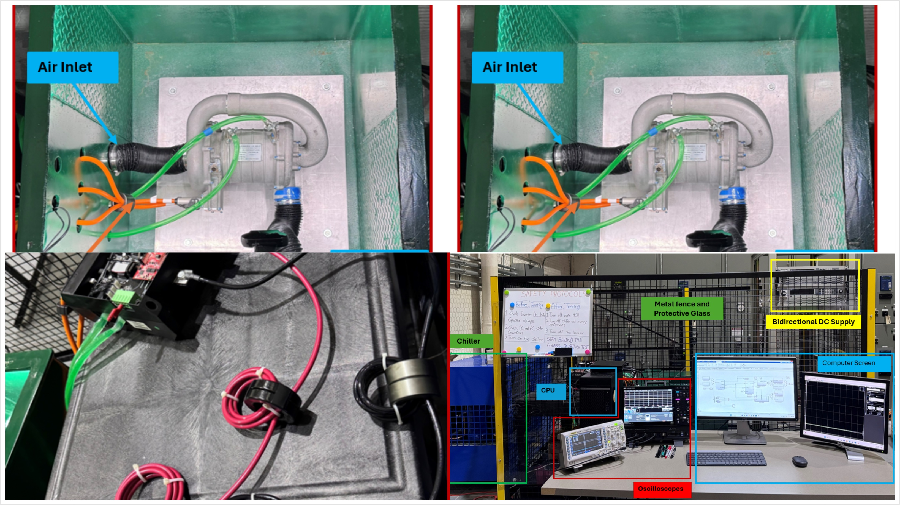
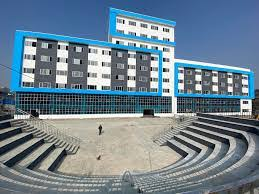
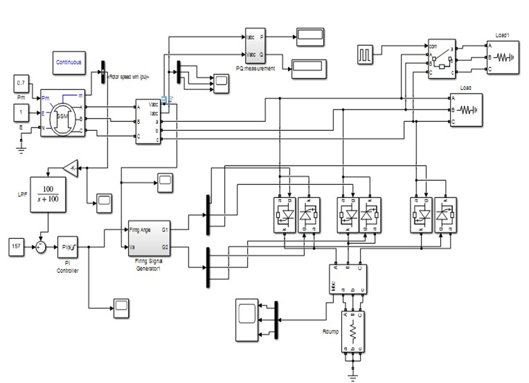

PV‑STATCOM
Enabled a PV inverter to provide active/reactive power support based on irradiance to improve utilization.
View details
Ph.D. Student
Power Electronics & Motor Drives
High‑Speed PMSM Control • Advanced Control Systems
Ph.D. student in Electrical & Computer Engineering at Mississippi State University, specializing in high‑performance motor drive control and power electronics. Background in power distribution, high‑speed PMSM control, and hardware‑in‑the‑loop (HIL) validation.
Research focuses on control strategies for ultra‑high‑speed PMSM compressors—FOC, DTC, and MIMO‑based frameworks—for robust, high‑bandwidth torque and speed regulation, with interest in advanced converter topologies and real‑time control.
I work at the intersection of power electronics, advanced control systems, and high‑performance electric drives. I design robust, high‑speed motor control algorithms and implement them on real hardware with modern simulation and HIL platforms.
I’ve contributed to ultra‑high‑speed PMSM drive projects—designing, tuning, and validating strategies like FOC, DTC, and MIMO‑based control—targeting high bandwidth, low torque ripple, and stability under extreme dynamics.
Beyond drives, I work on power converter control (e.g., modified PFC), digital loop design, and real‑time validation using Plecs/RT‑Box. I enjoy translating control laws, machine models, and converter dynamics into reliable, hardware‑ready solutions.









Enabled a PV inverter to provide active/reactive power support based on irradiance to improve utilization.
View details
Compared harmonic performance and power factor for GTO vs Thyristor rectifiers in micro‑grid loads.
View detailsGPA: 4.0 • Expected Graduation: Dec 2027. Coursework: Power Electronics, Feedback Control I/II, Nonlinear/Optimal Control, Power Systems, High‑Frequency Power Electronics.
Thesis: “Implementation of PV‑Solar Inverter STATCOM in Grid Connected System (PV‑STATCOM).”
Email: kj1377@msstate.edu
LinkedIn: linkedin.com/in/kishor-joshi-509b46186
GitHub: github.com/joshiK319